Матеріали Дентсплай · журнал «ДентАрт» 2013 №4 (73)
Система ГуттаКор — ще один ступінь еволюції ендодонтії
THE GUTTACORE SYSTEM IS ANOTHER EVOLUTION STAGE OF ENDODONTICS
Гутаперча на носії: за чи проти?
Використання обтураторів на носії (Термафіл/Thermafil, ДжейТі Обтуратор/GT Obturator, ПроТейпер Обтуратор/ProTaper Obturator) — одна з найпопулярніших технік пломбування кореневих каналів у всьому світі, що користується заслуженим визнанням провідних фахівців у галузі ендодонтії, серед яких Л. Стівен Б’юкенен/L. Stephen Buchanan, Джузеппе Кантаторе/Guiseppe Cantatore, Джуліан Веббер/Julian Webber, П’єр Машту/Pierre Machtou, Джеймс Л. Гутман/James L. Gutmann та інші.
Ця проста й ефективна методика дозволяє значно скоротити робочий час лікаря, забезпечуючи при цьому високу якість обтурації, особливо у вузьких кореневих каналах і каналах зі складною анатомією (Б’юкенен, 2009; Крістенсен Дж./Christensen G., 1991; Даммер ПМГ/Dummer PMH, Лайл Л/Lyle L, Рауль/Rawl, Кенеді ДжК /Kennedy JK., 1994; Кантаторе Дж., 2001) (фото 1, 2).
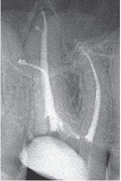
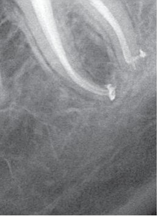
Фото 1, 2. Кореневі канали з вираженою кривизною, запломбовані гутаперчею на носії.
Проте багато стоматологів, як і раніше, ставиться з упередженням до застосування обтураторів, надаючи перевагу латеральній або вертикальній конденсації гутаперчі. Головною причиною цього є існування розхожих міфів про гутаперчу на носії, що частенько суперечать один одному.
Міф 1. Застосування обтураторів викликає опік періодонту, про що свідчить післяопераційна чутливість. Отже, ендодонтичне лікування неодмінно закінчиться невдачею.
Насправді правильне використання гутаперчі на носії не може призводити до опіку періодонтальних тканин. Постпломбувальний біль, що виникає у ряді випадків, пов'язаний з тим, що обтуратор у процесі введення в кореневий канал просуває повітря, що міститься в каналі, у навколокореневі тканини. Така чутливість минає самостійно без подальшого розвитку яких-небудь ускладнень.
Міф 2. При використанні обтураторів високий ризик виведення гутаперчі за верхівку кореня.
Незважаючи на свою простоту, методика пломбування з використанням гутаперчі на носії дуже вимоглива до дотримання правил формування кореневих каналів. Важливим етапом є калібрування апікального отвору, оскільки використання обтуратора, розмір якого менший, ніж діаметр апікального отвору, справді може призводити до виведення гутаперчі в періапікальні тканини. У той же час при правильній обробці кореневого каналу і чіткому дотриманні інструкцій з обтурації каналів з використанням цієї техніки така вірогідність практично не існує.
Міф 3. До верхівки доходить тільки носій обтуратора. Гутаперча і силер залишаються в устьовій і середній третині каналу.
Такий варіант справді можливий при недотриманні техніки препарування, іригації і пломбування каналу гутаперчею на носії. Існує кілька ключових чинників, що дозволяють запобігти виникненню цієї проблеми:
- Устя кореневого каналу має бути достатньо розширене («форма воронки»), щоб обтуратор входив вільно, не втрачаючи гутаперчу при вході в канал.
- Кореневий канал мусить бути повноцінно дезінфікований. Обов'язкова умова якісної іригації — застосування розчину гіпохлориту натрію і препаратів для видалення змазаного шару, що утворюється у процесі формування каналу, таких як 15-17% водний розчин ЕДТА або лимонна кислота. Такий підхід дозволяє добитися не лише якісної обтурації магістрального каналу, але й заповнення гутаперчею його відгалужень (латеральні і дельтовидні канали, анастомози між каналами).
- Устьова і середня частини каналу мають бути заповнені силером, який забезпечує плавне ковзання обтуратора уздовж його стінок. При цьому кореневий герметик не повинен мати занадто щільної консистенції. Ідеальним варіантом є силери на основі епоксидної смоли: ЕйЕйч Плюс (Дентсплай) /AH Plus (Dentsply), Едсил (Мета Біомед) /Adseal (Meta Biomed) та ін.
- Обтуратор повинен вводитися в кореневий канал повільно і плавно. Обтуратори Термафіл з конусністю 4% вводяться в канал упродовж 3-4 секунд. Обтуратори з вищою конусністю (ДжейТі, ПроТейпер і ВейвВан) — 6-8 секунд.
Використання гутаперчі на носії дозволяє добитися передбачуваних успішних результатів обтурації кореневих каналів, що підтверджується численними дослідженнями (Біті/Beatty і співавт., 1989; Даммер і співавт., 1993; Генкоглу/Gencoglu і співавт., 1993, 2002, 2007; Ксю/Xu і співавт., 2007; Инен/Inan і співавт., 2007; Сандерс/ Saunders і співавт., 1994; Гутмен і співавт., 1993; Делет/Dalat і співавт., 1994; Патомванич/ Pathomvanich і співавт., 1996; Ебарка/Abarca і співавт., 2001; Контакіотіс/ Kontakiotis і співавт., 2007)
Міф 4. Обтуратори складно видаляти з каналу при повторному ендодонтичному лікуванні.
Багато клініцистів стикаються з певними проблемами при необхідності розпломбувати канал, запломбований гутаперчею на носії. Ці проблеми найчастіше зумовлені відсутністю у лікаря відповідного інструментарію. Дані літератури свідчать про те, що розпломбування каналу, запломбованого обтуратором, вимагає навіть менше часу, ніж повторне лікування каналу, запломбованого гутаперчею (Фрайлих/Frajlich, 1998; Ройзенблат/Royzenblat, Гудел/Goodell, 2007). Оптимальним рішенням для цих цілей є використання машинних нікель-титанових інструментів (ПроФайл, ДжіТіФайл і т. д). У своїй практиці я використовую файли ПроТейпер Ретритмент (серія D) (фото 3). Ці інструменти дозволяють буквально впродовж однієї хвилини витягнути пластиковий носій обтуратора, після чого видалення залишків гутаперчі зі стінок каналу стає досить простим завданням.
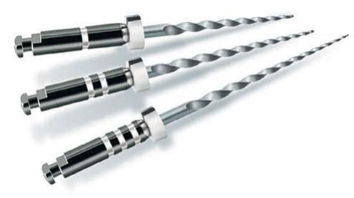
Міф 5. Пластиковий носій обтуратора перешкоджає повноцінній підготовці каналу при постановці штифтових конструкцій.
При препаруванні каналу під штифтову конструкцію перед тим, як використати розвертки відповідного розміру, необхідно видалити носій обтуратора на потрібну глибину. Для цих цілей часто використовуються алмазні бори (що досить небезпечно), ультразвукові насадки і електричні розігрівні плагери (Систем Бі/ System B, Каламус Дуал/ Calamus Dual, БіФіл/BeeFill та ін.). Проте, на мій погляд, найбільш передбачуваним варіантом є застосування спеціальних борів ПостСпейс Дентсплай Майлліфер (фото 4). Цей бор для турбінного наконечника використовується без водяного охолодження і дозволяє одним порухом видалити пластиковий носій з кореневого каналу на довжину штифтової конструкції.
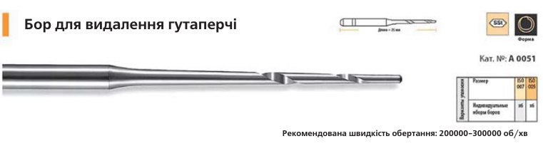
Система ГуттаКор/GuttaCore™: характеристики і методика застосування
Виходячи зі сказаного вище про упередження лікарів, основною претензією стоматологів до обтураторів так чи інакше є наявність у них пластикового носія. Найближчим часом на російському ринку буде представлено продукт, що демонструє принципово нову концепцію застосування гутаперчі на носії: обтуратори ГуттаКор /GuttaCore™ (фото 5), носії яких виготовлені не з пластика, а з еластомера гутаперчі з поперечними міжмолекулярними зв'язками (поперечно-зшитої гутаперчі). Таким чином, обтуратор цілком складається з гутаперчі в різних формах (фото 6). Це забезпечує не лише швидку і якісну тривимірну обтурацію кореневих каналів, але й простоту препарування каналу для постановки штифта і видалення кореневої пломби у разі потреби повторного ендодонтичного лікування. Носій видаляється з кореневих каналів так само легко, як гутаперча, оскільки і є гутаперчею. Отже, для цих цілей ми можемо використати ті ж самі інструменти, що і в каналах, запломбованих за методикою латеральної або вертикальної конденсації гутаперчі. Робота із системою ГуттаКор дуже проста, проте існує ряд ключових моментів, що дозволяють уникнути помилок при її застосуванні. Нижче подано поетапну послідовність застосування обтураторів ГуттаКор.
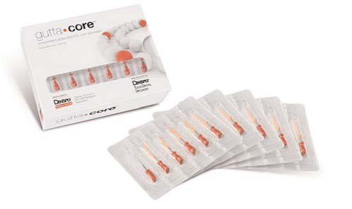
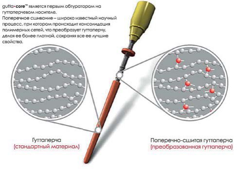
- Кореневий канал має бути відповідним чином сформований і дезінфікований.
Cистема ГуттаКор універсальна, тобто може використовуватися незалежно від того, якими інструментами був оброблений кореневий канал. Проте, згідно з результатами досліджень, після препарування кореневі канали повинні мати або конусність не менше 6% (.06), або великий діаметр апікального отвору. Це необхідно для забезпечення їх якісної іригації і тривимірної обтурації (HYPERLINK «http://www.ncbi. nlm.nih.gov / pubmed?term = Boutsioukis C [Author] &cauthor=true&cauthor _ uid=20618877» Boutsioukis C, HYPERLINK «http://www.ncbi. nlm.nih.gov/pubmed?term=Gogos C[Author]&cauthor=true&cauthor _ uid=20618877» Gogos C, HYPERLINK «http://www.ncbi.nlm. nih.gov/ pubmed?term=Verhaagen%20B[Author]&cauthor=true&cauthor _ uid=20618877» Verhaagen B і співавт., 2010). При використанні системи ГуттаКор кореневий канал має бути розширений як мінімум до розміру 20.06 або 25.04. - Підбирається відповідний розмір обтуратора ГуттаКор. Якщо для препарування кореневого каналу використовувалися інструменти з конусністю .06 або більше, вибирається обтуратор, що має однаковий розмір з фінішним нікель-титановим файлом. Якщо застосовувалися інструменти з конусністю .04 — на один розмір менше (табл. 1). У жодному разі не можна зрізувати гутаперчу з кінчика обтуратора, оскільки це може призвести до ушкодження носія.
| Апікальна конусність .04 | Обтуратори ГуттаКор | Апікальна конусність .06 | Обтуратори ГуттаКор | Інструменти ВейвВан | Інструменти ПроТейпер |
|---|---|---|---|---|---|
| 20/.04 | – | 20/.06 | 20 | Маленький | F1 |
| 25/.04 | 20 | 25/.06 | 25 | Основний | F2 |
| 30/.04 | 25 | 30/.06 | 30 | F3 | |
| 35/.04 | 30 | 35/.06 | 35 | ||
| 40/.04 | 35 | 40/.06 | 40 | Великий | F4 |
| 45/.04 | 40 | 45/.06 | 45 | ||
| 50/.04 | 45 | 50/.06 | 50 | F5 | |
| 55/.04 | 50 | 55/.06 | 55 | ||
| 60/.04 | 55 | 60/.06 | 60 | ||
| 70+/.04 | 60 | 70+/.06 | 70 | ||
| 80+/.04 | 70 | 80+/.06 | 80 | ||
| 90+/.04 | 80 | 90+/.06 | 90 |
- Дуже важливим етапом для забезпечення передбачуваної і якісної тривимірної обтурації є калібрування кореневого каналу. Для цього в кожному блістері ГуттаКор, окрім п'яти обтураторів, є верифікатор відповідного розміру і конусності (фото 7, 8). Це ручний інструмент, який пасивно вводиться на робочу довжину кореневого каналу. Якщо верифікатор пасивно не припасовується на повну довжину, можна використати його як фінішний файл для додаткового розширення апікальної частини каналу.
- При використанні обтураторів ГуттаКор силер вноситься тонким шаром лише в устьову або, у разі довгих кореневих каналів, устьову і середню частини каналу. Для внесення силера можна застосовувати паперовий штифт, гострий зонд або, у разі використання силера ЕйЕйчПлюс Джет/AH Plus Jet, спеціальну насадку (фото 9) змішувача. Розігрітий обтуратор у процесі введення в кореневий канал рівномірно розподілить кореневий герметик по його стінках. При надмірній кількості силера або внесенні його на повну робочу довжину дуже високий ризик його екструзії в періапікальні тканини.
- На обтураторі встановлюється робоча довжина, після чого він поміщається у тримач одного з нагрівальних елементів печі Термапреп 2/Thermaprep 2 (фото 10, 11).
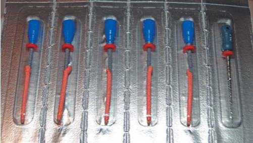
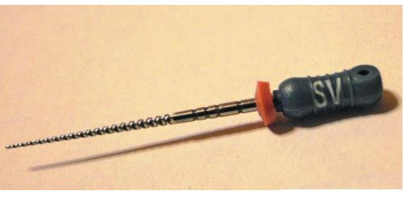
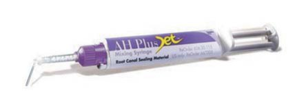
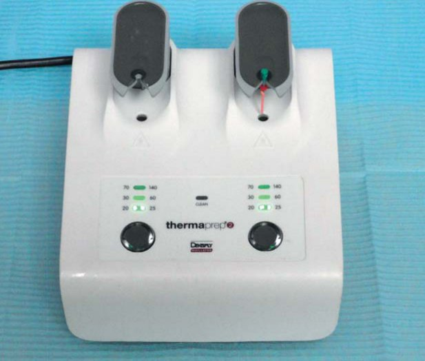
Відмітними характеристиками печі Термапреп є швидке тривимірне розігрівання обтураторів зі збереженням властивостей гутаперчевого носія, а також можливість одночасної роботи обох нагрівальних елементів. При роботі із системою ГуттаКор, на відміну від обтураторів з пластиковим носієм, на робочій панелі печі, незалежно від розміру обтуратора, виставляється мінімальний рівень розігрівання: 20-25 (фото 12). Плавним натисненням на тримач обтуратор поміщується в нагрівальний елемент Термапреп. При цьому автоматично запускається робочий цикл печі і спалахує світловий індикатор.
Можливість одночасної роботи обох нагрівальних елементів дозволяє за необхідності розігрівати відразу два обтуратори. Після закінчення нагрівання піч подасть звуковий сигнал, а світловий індикатор почне блимати. Акуратним натисненням піднімається тримач, обтуратор витягають (фото 13) і повільно, без обертання, вводять у кореневий канал на робочу довжину.
При складному доступі до кореневих каналів, особливо у бокових зубах при ускладненому відкриванні рота, можна зафіксувати носій обтуратора ГуттаКор за допомогою пінцета (фото 14), видалити рукоятку, погойдавши її з одного боку в другий, і, утримуючи обтуратор пінцетом, вводити його в канал (фото 15, 16).
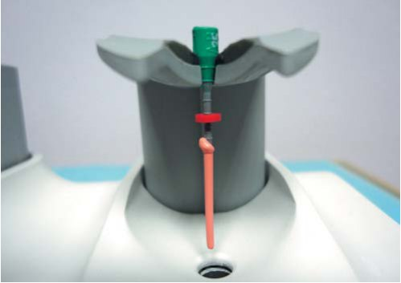
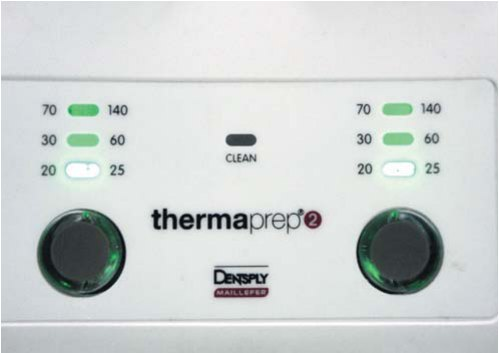
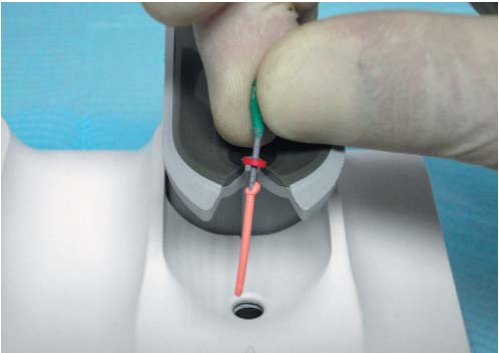
Фото 11-13. Розігрівання обтуратора в печі Термапреп 2.
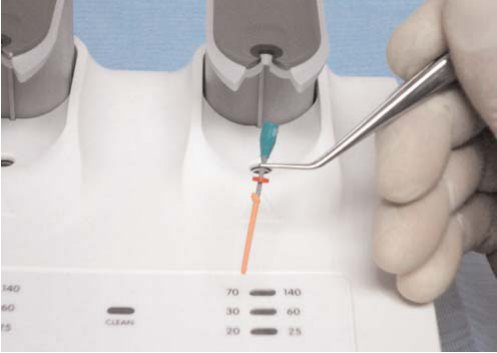
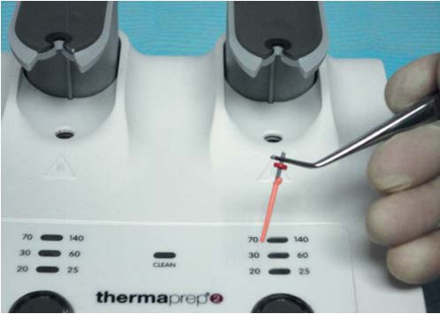
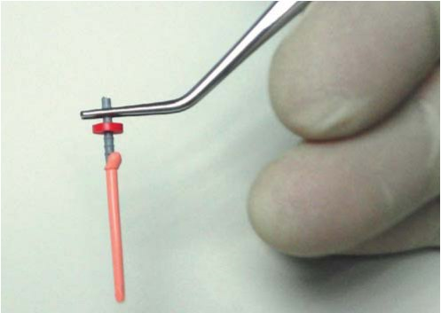
Фото 14-16. Застосування обтураторів ГуттаКор при складному доступі до кореневих каналів.
- Після введення обтуратора в кореневий канал можна сконденсувати пластифіковану гутаперчу в устьовій частині кореневого каналу за допомогою плагера. Це створює додатковий гідродинамічний тиск, що дозволяє гутаперчі ще краще заповнювати відгалуження магістрального каналу, такі як латеральні і дельтовидні канали, анастомози між каналами і т. д. У процесі конденсації необхідно міцно утримувати обтуратор за рукоятку, щоб уникнути його зміщення.
- Завершальним етапом обтурації є видалення рукоятки і носія вище рівня устя. При застосуванні системи ГуттаКор немає необхідності використовувати для цих цілей спеціальні бори Термокат. Можна або зрізати носій на рівні устя за допомогою звичайного кулястого бору чи гострого екскаватора, або просто відламати його легкими бічними рухами. Для очищення порожнини зуба від залишків гутаперчі і силера можна використати ватну кульку, просочену хлороформом або етиловим спиртом.
Висновок
Еволюція ендодонтії іде шляхом спрощення технічної частини процедур і скорочення робочого часу лікаря, що вимагається для їх виконання. Розробляються нові інструменти, матеріали, устаткування і аксесуари, які дозволяють скоротити кількість робочих етапів і зробити ендодонтичне лікування менш трудомістким. При цьому, безперечно, велика увага звертається на одночасне підвищення передбачуваності результатів і успіху лікування в цілому. Розробка обтураторів ГуттаКор — справді революційний етап еволюції ендодонтії. Використання цієї системи дозволяє швидко і без особливих зусиль добитися якісної тривимірної обтурації в ситуаціях, де лікар може зіткнутися з певними проблемами при проведенні інших методик пломбування кореневих каналів (фото 17-19).
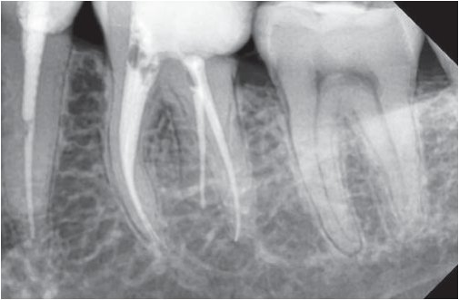
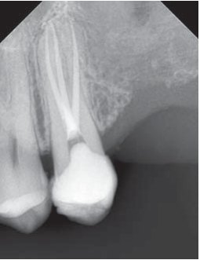
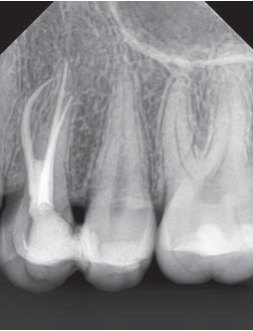
Фото 17-19. Приклади використання обтураторів ГуттаКор у клінічних ситуаціях з нестандартною анатомією кореневих каналів.
Література
- Buchanan S. Распространенные заблуждения об обтурирующих материалах на носителе / Эндодонтическая практика, декабрь 2009; 7-11.
- Christensen G. Improved Thermafil concept well accepted. CRA Newsletter 1991;12:4.
- Cantatore G. Thermafil versus System B. Endod Pract 2001;5:30-39.
- Dummer PMH, Lyle L, Rawl, Kennedy JK. A laboratory study of teeth obturated by lateral condensation of gutta-percha or Thermafil obturators. Int Endod J 1994;27:32-38.
- Dummer PMH, Kelly T, Meghji A, Sheikh I, Vanitchai JT. An in vitro study of root fillings in teeth obturated by lateral condensation of guttapercha or Thermafil obturators. Int Endod J 1993;26:99-105.
- Beatty RG, Baker PS, Haddix J, Hart F. The efficacy of four root canal obturation techniques in preventing apical dye penetration. J Am Dent Assoc. 1989;119:633–637.
- Gencoḡlu N, Samani S, Gunday M. Evaluation of sealing properties of Thermafil and Ultrafil techniques in the absence or presence of smear layer. J Endod 1993;19:599-603.
- Gencoḡlu N, Garip Y, Samani S. Comparison of different guttapercha root filling techniques: Thermafil, Quick Fill, System B and lateral condensation. Oral Surg Oral Med Oral Pathol Oral Radiol Endod 2002;93:333-336.
- Gencoḡlu N, Orucoḡlu H, Helvacioḡlu D. Apical Leakage of Different Gutta-Percha Techniques: Thermafil, Js Quick-Fill, Soft Core, Microseal, System B and Lateral Condensation with a Computerized Fluid Filtration Meter. Eur J Dent. 2007 Apr;1(2):97-103.
- Xu Q, Ling J, Cheung GS, Hu Y. A quantitative evaluation of sealing ability of 4 obturation techniques by using a glucose leakage test. Oral Surg Oral Med Oral Pathol Oral Radiol Endod. 2007 Oct;104(4): 109-13.
- Inan U, Aydemir H, Tasdemir T. Leakage evaluation of three different root canal obturation techniques using electrochemical evaluation and dye penetration evaluation methods. Aust Endod J. 2007 Apr;33(1): 18-22.
- Saunders W.P., Saunders E.M. Influence of smear layer on coronal leakage of Thermafil and laterally condensed gutta-percha root fillings with a glassionomer sealer. J Endod 1994;20:155-158.
- Gutmann J.L., Saunders W.P., Saunders E.M., Nguyen L. An assessment of plastic Thermafil obturation technique. Part I. Radiographic evaluation of adaptation and placement. Int Endod J 1993;26:173-178.
- Dalat D.M., Spängberg L.S. Comparison of apical leakage in root canals obturated with various gutta percha techniques using a dye vacuum tracing method. J Endod. 1994 Jul;20(7):315-319.
- Pathomvanich S., Edmunds D.H. The sealing ability of Thermafil obturators assessed by four different microleakage techniques. Int Endod J. 1996 Sep;29(5):327-334.
- Abarca A.M., Bustos A., Navia M. A comparison of apical sealing and extrusion between Thermafil and lateral condensation techniques. J Endod. 2001 Nov;27(11):670-672.
- Kontakiotis E., Chaniotis A., Georgopoulou M. Fluid filtration evaluation of 3 obturation techniques. Quintessence Int. 2007 Jul-Aug; 38(7): 410-416.
- Frajlich S.R. et al. Comparative study of retreatment of Thermafil and lateral condensation endodontic fillings. Int Endod J. 1998; 31(5): 354-357.
- Royzenblat A., Goodell G.G. Comparison of removal times of Thermafil plastic obturators usinf ProFile rotary instruments at different rotational speeds in moderately curved canals. J Endod 2007; 33(3): 256-258.
- Boutsioukis C., Gogos C., Verhaagen B. et al. The effect of root canal taper on the irrigant flow: evaluation using an unsteady Computational Fluid Dynamics model. Int Endod J. 2010 Oct;43(10):909-16.